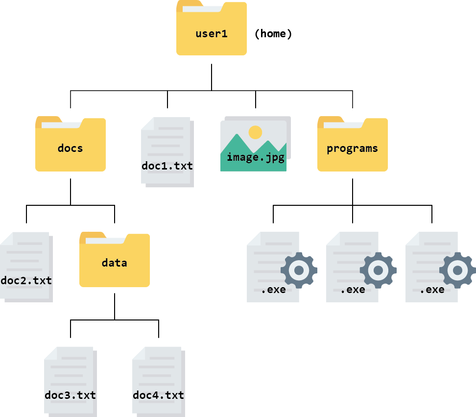
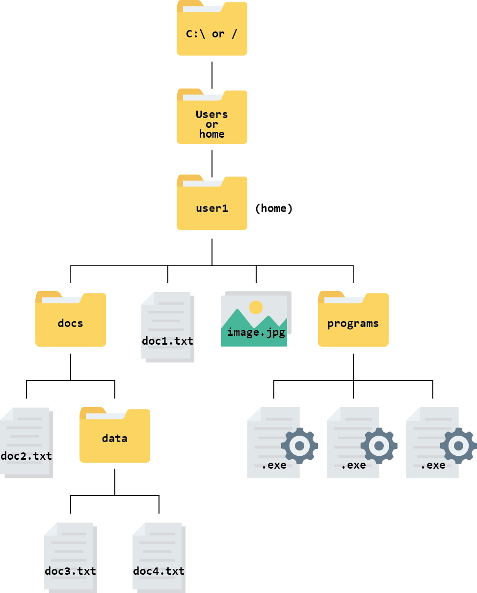

Understanding your file system
What is a file system?
A file system is exactly what it sounds like - a way for your computer to store your data in an organised way using files.
You will definitely have come across files before. All the data stored on your computer is split into separate files, making it much easier to keep track of than if it was all in one big blob.
There are lots of different file types; we can often find out something about what kind of data a file contains by looking at its filename extension. For example:
.txt tells us that the file contains text
.exe tells us that the file contains a program to be run
.html tells us that the file contains a webpage, and should be run inside a web browser
We will come across various different file types during this course, some of which you may not have seen before. Do not worry. We will introduce them to you and explain how to use them when necessary.
In a file system, files are organised into directories, which can also be called folders. Hopefully you will have used folders to organise your files before! Folders can contain sub-folders, which can contain their own sub-folders, and so on almost without limit.
It is easiest to picture a file system, or part of it, as a tree that starts at a directory and branches out from there. This is called a hierarchical structure. The figure below shows an example of a hierarchical file structure that starts at the “home directory” of the user named user1:

The directory you are working inside is called your working directory. For example, if you were editing doc2.txt in the diagram above, your working directory would be the folder called docs.
Think about your own computer and how your files and directories are organised. Sketch a tree diagram like the one above for your file system.
Hint: remind yourself of your file system’s layout using a file manager application such as:
| OS | Icon |
|---|---|
| File Explorer (Windows) | |
| Finder (Mac) |
You probably already use these applications regularly to find, open and organise files.
File paths
It is not practical to draw out a tree diagram every time we want to refer to a file’s location. Instead, we can represent the information as a file path.
In a file path, each directory is represented as a separate component separated by a character such as \ or /. It is like writing an address or set of instructions for someone to follow if they want to find a specific file.
For example, the path for the file called doc3.txt in the file system above looks like this: user1/docs/data/doc3.txt in a Unix or Linux computer.
It is useful to note that Windows uses backslashes (\) to separate path components, while Unix, Linux and Mac use forward slashes (/).
Root and home directories
The root is the top-level of directories, which contains all other directories further down the tree.
The root is represented as a / in Unix, Linux, and Mac operating systems.
In the Windows operating system, the root directory is also known as a drive. In most cases, this will be the C:\ drive.
Even though the root directory is at the base of the file tree (or the top, depending on how you view it), it is not necessarily where our journey through the file system starts when we launch a new session on our computer. Instead our journey begins in the so called “home directory”.
In Windows, Mac, Unix, and Linux, the “home directory” is a folder named with your username. Your personal files and directories can be found inside this folder. This is where your computer assumes you want to start when you open your file manager.
On Windows and Mac your home directory is a directory inside directory called Users and named with your username. On Unix/Linux systems it is called home.
From the root, the file system is:

Your home directory is:
C:\Users\user1\on Windows/Users/user1/on Mac/home/user1/on Linux
In Linux (the operating system we will use later in the course), a tilde symbol (~) is used as a shortcut for your home directory. So, for example, the path ~/docs/doc2.txt is equivalent to /home/user1/docs/doc2.txt.
Absolute vs relative paths
There are two ways of writing a file path - absolute paths and relative paths.
An absolute path contains the complete list of directories needed to locate a file on your computer. This allows you to reach the file no matter where you are.
A relative path describes the location of a file relative to your current working directory. For example, if you were already in the folder called docs, the relative path for doc3.txt would be data/doc3.txt. There is no need to give instructions to navigate a route you have already taken.
If, however, you were in the folder called docs and you wanted to open one of the .exe files, you would need to give the path to .exe relative to the docs folder or give the absolute path.
Use the file system above to answer these questions.
- What is the absolute path for the document
doc4.txton a Linux computer? - Assuming you are currently in the directory called
docs, what is the relative path for the documentdoc2.txt?
- The absolute path is
/home/user1/docs/data/doc4.txtor~/docs/data/doc4.txt. - The relative path is
doc2.txt(as you are already in the directory wheredoc2.txtis stored).
Create a folder for the course
To keep things tidy and easily accessible, we will create a folder (directory) to keep everything related to this course: the key you will need to log in, your notes, data etc.
In theory you can make this folder anywhere in your file system but we recommend making it inside your Desktop folder, to make it easy to access.
Create the folder
cloudspanin your Desktop.Minimise all windows until you can see your desktop background. Right click and select New, then Folder. Name the folder
cloudspan.You should see a folder icon appear on your desktop with the label
cloudspan.Additionally, if you enter your file explorer application you should be able to click on the Desktop directory at the side and see the
cloudspanfolder.Write down the absolute path to your
cloudspanfolder.Find out what the absolute path is using your file manager application. Right click on the folder, or in any blank space inside the folder, and then:
- Windows users: select Properties, then look at the field called Location. Your path will be separated with backslashes (
\) but you should write it down using forward slashes (/). - Mac Users: select Get info, then look at the field called Where. Your path should start with the word
Users/- ignore anything that comes before this. Separate your path components using forward slashes (/).
Now add the folder name (
/cloudspan) to the end of this path. This is your absolute path. Once you have this written down, do not lose it! Now you can find your way back to thecloudspanfolder whenever you need to, no matter where you are in your file structure.- Windows users: select Properties, then look at the field called Location. Your path will be separated with backslashes (
Download your login key file
Next we will download your unique login key file from the email you received from the Cloud-SPAN team. This type of file is called a .pem file. It contains a certificate which allows you to communicate with the Cloud securely. Without the .pem file you cannot access the Cloud.
For now we will use the file explorer to move the .pem file around.
Find out where downloads are saved on your computer.
How you do this will depend on which browser you use. You can find instructions for changing your default download location in Chrome, Edge or Safari.
If you already know which folder your downloads go to, then you can skip this step.
Download your login key file to the folder you created a few minutes ago.
Click on the link embedded in the email you received from the Cloud-SPAN team.
Mac users may need to Click on ‘download’ when the file says it can’t be opened.
If your browser asks you “where do you want to download the file?”, choose the
cloudspandirectory.Otherwise, once downloading is finished, copy and paste/drag and drop your login key file from wherever it was downloaded to your
cloudspanfolder.
Now you are ready to log into the cloud!